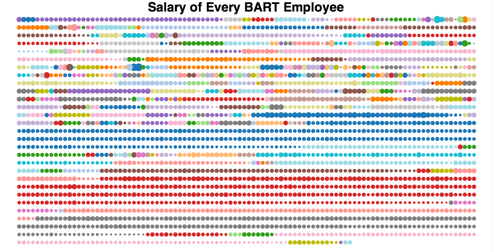

What is going on with BART?
What is the history of BART/union negotiations?
The BART unions
In 2001, a strike was threatened, and BART employees received a 22 percent raise over the four year period from 2001 to 2005. source
In 2005, another strike was threatened, and employees won 7% over four years from 2005 to 2009. (need source)
In 2009, BART employees negotiated a contract that gave no raise for the following four years. When an agreement wasn't reached July 1st, 2013 the BART unions held a 5 day strike immobilizing many in the Bay Area.
The major points of contention for the Unions are Pay raises, reduced employee contribution to pensions, medical benefits and safety.
What can we do about it?
Are the demands reasonable?
In a word, NO.
BART, also known as "The District", consistently loses money to tune of about $300 million each year in the course of operations. Their employees are the highest compensated government agency employees in the Bay Area, and nearly in the entire nation. Their wages have kept up with inflation, while millions of other workers across the country have not. And yet, BART unions and employees adamantly insist that they need further pay increases. What makes BART employees feel that they are special and entitled to continual pay increases every year?
Article:

BART is Bending Us Over Backwards
Author: Hyon Chu @adailyventure
Data Sources:
inflation
proposal
fare raises
revenue
How Much Do BART Employees Earn?
Project: Salary Dot Matrix
Creator: Victor Powell @vicapow
Location: http://blog.vctr.me/bart
Data Sources: bart-comp.csv
This visualization allows you explore each BART employee in terms of their costs of employment, such as base salary, overtime pay, health benefits, 401(k), and pension contributions.
This tells us that:
What are the effects of the strike?
Budget Impact
Ridership Impact
Socioeconomic Impact
STUFF
Events
These projects were inspired by and created during these events:
10/02/2013 - hack the BART strike
http://www.meetup.com/Bay-Area-d3-User-Group/events/137541752/
10/07/2013 - hack the BART strike round 2
http://www.meetup.com/Bay-Area-d3-User-Group/events/143668252/
Credits
Bay Area d3 User Group: http://www.meetup.com/Bay-Area-d3-User-Group/ VUDLab @ UC Berkeley: http://vudlab.com